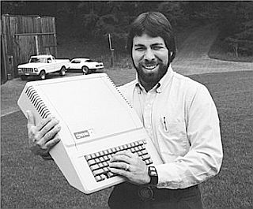

Steve Wozniak

electronics engineer, Apple co-founder
Early Life/Education/Before Apple
- Born: August 1950
- 1968-1969: Attended the University of Colorado at Boulder
- 1971: built "Blue Box" phreaking device (phone hacking)
- 1975: Dropped out of UC Berkeley
- 1975: got a job at Hewlett-Packard
Founding Apple
- 1976: Designed his own microcomputer, HP didn't want to support it
- 1977: Released Apple II, appealed to consumers, not just hobbyists
- 1980: Apple goes public, valued at $1B
- 1981: Plane crash caused temporary traumatic amnesia
- 1985: Retired from Apple
- 1987: Earned bachelors in electrical engineering from UC Berkeley